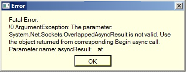

F.A.Q | Tentang OtomaX
Tanya:
Ketika saya menggunakan OtomaX versi 3.7.0, saya menjumpai pesan error seperti di bawah ini:



Apa dan bagaimana? mohon arahannya...
Jawab:
Pesan error di atas memberitahukan kepada Anda bahwa:
- Server XMPP/Jabber yang Anda pakai di IM Center ada yang sedang down. Matikan Modul IM Center yang down tersebut. Untuk solusi lainnya pakai layanan chat Jabber/XMPP sendiri, klik disini.
- Internet Anda tidak stabil atau kurang cocok dengan layanan chat Server XMPP/Jabber yang Anda pakai. Ganti dengan ISP (Internet Service Provider) lain.
Apabila memiliki pertanyaan lain terkait hal diatas silahkan klik disini
Catatan: Nimbuzz termasuk dalam server XMPP/Jabber